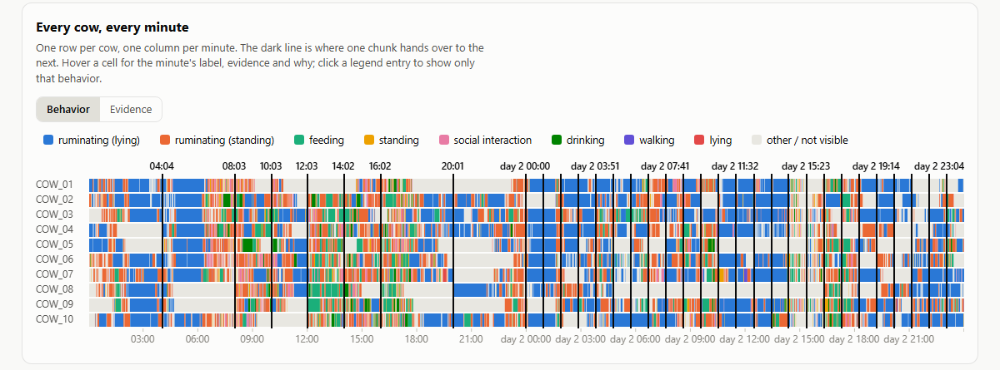
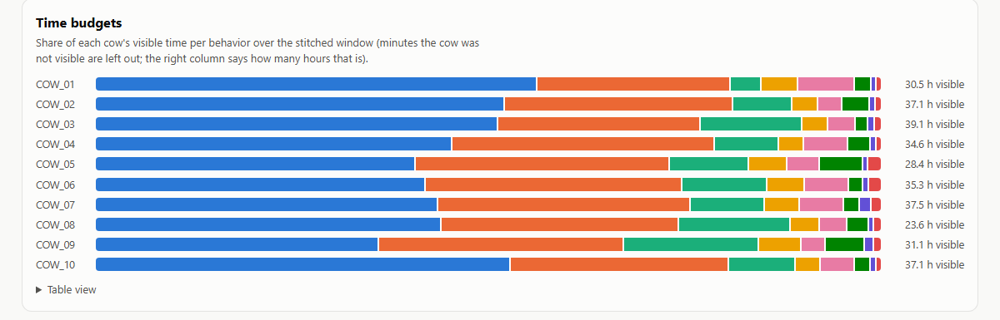
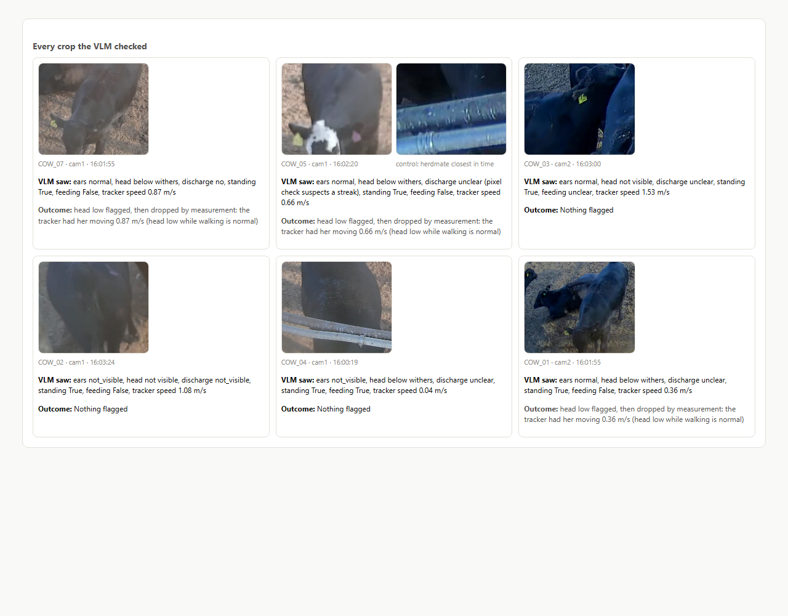
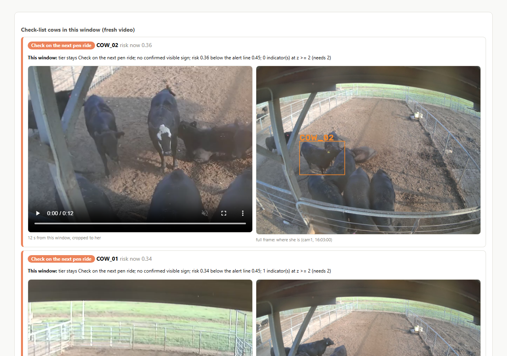
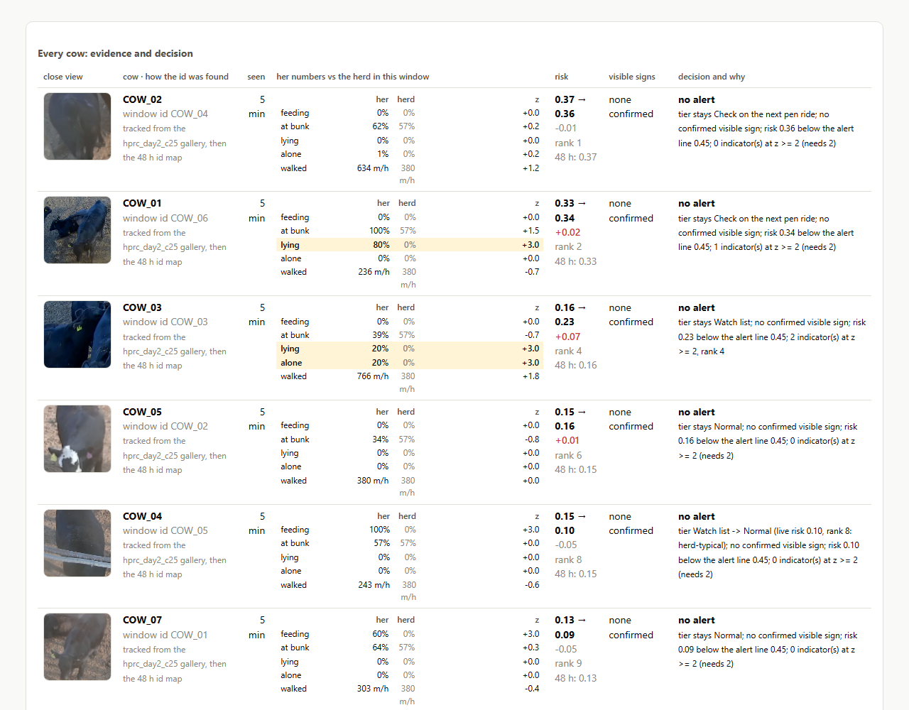
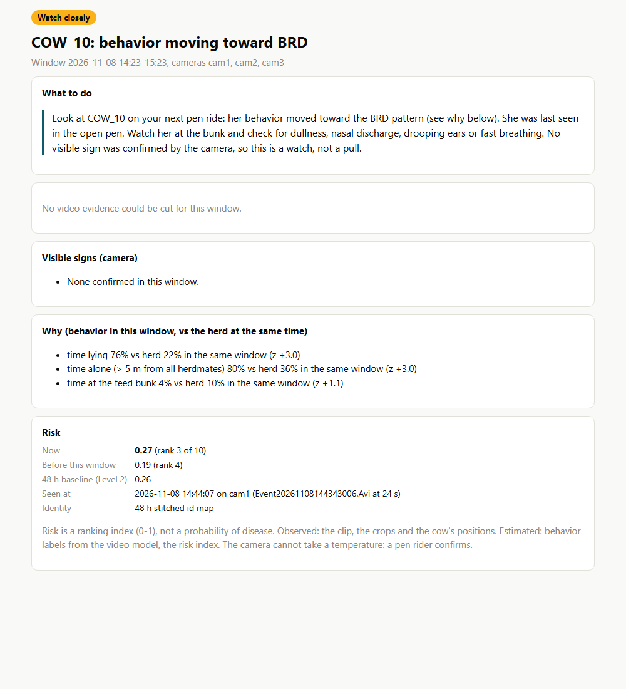
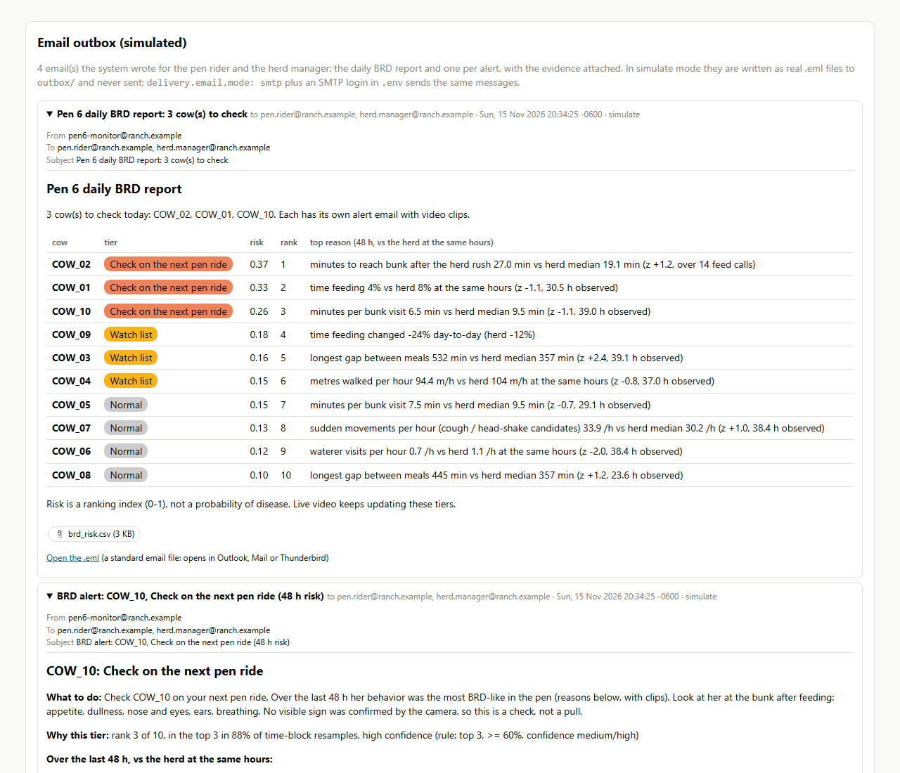

0How it works
Measurement first, judgement second. Code measures positions, zones, speed and who is near whom. The agents (vision-language models that plan, call tools and look at frames) decide only what the measurements cannot settle, and code checks every claim before it counts.
1Level 1 · every cow, every minute
Each cow keeps one id across the 3 cameras and both days, and every minute gets a behavior with its basis: observed, verified by the agent, estimated or not visible.

The whole 48 h: one row per cow, one column per minute. Dark lines are where one processing chunk hands over to the next.
Basis of the label (48 h, 10 cows)
| basis | minutes | share |
|---|---|---|
| observed: stage-1 label passed rule checks | 16,963 | 58.9 % |
| verified: the agent looked at the frames | 509 | 1.8 % |
| unverified: seen, agent could not confirm | 2,142 | 7.4 % |
| estimated: calm bout carried or gap filled | 441 | 1.5 % |
| not visible: no camera saw the cow | 8,745 | 30.4 % |
4,858 bouts. The behavior agent confirmed 1,815 minutes, corrected 335, and abstained on 5,003 rather than guess. All 181,622 of its actions are logged with a reason.
Held-out checks
| check | result |
|---|---|
| Detector P / R, day | 0.84 / 0.88 (COCO YOLO26-x: 0.98 / 0.71) |
| Detector P / R, IR night | 0.93 / 0.88 (COCO: 0.95 / 0.73) |
| Behavior, 64 tasks by clip | accuracy 0.69, macro-F1 0.37 |
Three saved agent traces

Time budgets: each cow's share of visible time per behavior.
2Level 2 · BRD risk ranking
13 indicators from the BRD literature, each a robust z against the same pen at the same hours, so weather and feeding times cancel out. Risk is a ranking index, not a probability.
| # | Cow | risk | in the top 3 in | Why, against the herd at the same hours |
|---|---|---|---|---|
| 1 | COW_02 | 0.37 | 92 % | 27 vs 19 min to reach the bunk after 14 feed rushes; walks less; feeds 7 vs 10 % |
| 2 | COW_01 | 0.33 | 67 % | feeds 4 vs 8 %; bunk visits 5.8 vs 9.5 min; lies 57 vs 51 % |
| 3 | COW_10 | 0.26 | 88 % | short bunk visits; 139 vs 100 min longest lying bout; visits falling faster than the herd's |
| 4–10 | 0.10–0.19, each in the top 3 in ≤ 24 % of 200 resamples | |||
Video evidence: COW_02
The 8 Nov 16:28 feed rush (3 cameras + the pen map, 4x): 6 of 10 cows feed while COW_02 lies alone in the alley, 11.6 m from the nearest herdmate.
Feed-call latency: cam3, 7 Nov 00:04.
Closest view: cam1, 7 Nov 17:49.
3Level 3 · live early warning
live_watch.py watches new video, updates each cow's risk, and sends an alert with video evidence that a pen rider can act on. python live_watch.py --clip <any camera file> runs a judge's clip end to end. When this page is served by serve_showcase.py (the Docker image's default), your own run opens at /live/.
The morning list: alert tiers from the 48 h risk
| Tier | Rule | Cows | What the pen rider gets |
|---|---|---|---|
| Pull and examine | a confirmed visible sign | none | pull, take a temperature, treat by protocol |
| Check on the next pen ride | top 3, in the top 3 in ≥ 60 % of resamples, medium/high confidence | COW_02, COW_01, COW_10 | alert card, clips, email |
| Watch list | rank ≤ 5 or top 3 in ≥ 20 % | COW_09, COW_03, COW_04 | dashboard |
| Normal | everyone else | 4 cows | nothing |
One 5-min clip end to end (11-07 16:00, 3 cameras, 7 cows)
Cows mapped to the 48 h ids, behavior compared with the herd in the same window, close crops checked for drooping ears, head carried low and nasal discharge. The VLM raised 4 flags: the tracker rejected 3 "head low" because the cows were walking (0.36–0.87 m/s), and a second look next to a herdmate rejected the "nasal discharge". No false alarm went out.

Every crop the VLM checked: what it saw, the tracker's speed at that second, and what happened to each flag.

Check-list cows get a fresh 12 s clip every window (regenerated by live_watch.py; video is kept out of the repository).

Full frame: where she is in the pen (cam1, 16:03).
Every cow, every decision

For every cow: a close view, how her id was found, her numbers vs the herd in this window, risk before → after, and why she was or was not alerted.
An alert a pen rider can act on

Day 2 replay: COW_10 lay 76 % of the hour vs 22 % for the herd and was alone 80 % vs 36 %.
Email (simulated, never sent)

Every alert and a daily BRD report are written as real email files with the evidence attached, to placeholder ranch addresses.
4What it can and cannot claim
- Observed means a detection we can point to (camera, second, box). Estimated is carried or filled, and labelled so. Risk uses observed time only.
- 30 % of cow-minutes are not visible, mostly occlusion in the resting area and far corners at night.
- Identity across chunks is the weakest link. A wrong join blurs differences between cows more than it invents them.
- Ten cows and 48 h cannot validate a BRD model. With no diagnoses, the score is a ranked suspicion index, not a probability.
- Visible signs need close daylight views. At night the alerts rely on behavior and say so. The camera cannot take a temperature: a pen rider confirms.
5Every file
| What | File |
|---|---|
| Technical brief (2 pages) | docs/TECHNICAL_BRIEF.pdf |
| Results overview | submission/README.md |
| Level 1: bouts, minutes, time budgets, actions | stitched/final/ |
| Level 1: agent traces | stitched/final/traces/ |
| Cow-id map across chunks | stitched/id_map.csv |
| 48 h interactive viewer | stitched/viewer.html |
| Level 2: ranking, cards, clips, evidence, agent traces | level2/ |
| Level 3: example runs, reports, alerts, emails | level3/ |
| How to reproduce everything | README.md, docs/PIPELINE.md |